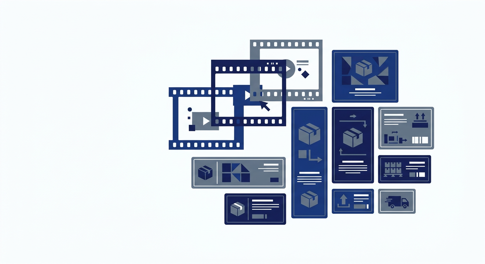

SHIRA — учёт этикеток и видеоархива
Индексирует видео, находит этикетки с QR‑кодами и штрихкодами на кадрах, помогает проверить результаты и сохранить их в CSV/XLSX. Работает офлайн на вашем компьютере.
Иллюстрация concepts — не скриншот рабочей программы.

Что делает SHIRA
Видеоархив
Добавляйте видеофайлы в очередь. Программа равномерно выбирает кадры или индексирует их интервалами и фиксирует моменты, где обнаружены этикетки.
Распознавание этикеток
Находит этикетки с QR‑кодами и штрихкодами, считывает идентификаторы (например, номера заказов) и показывает таймкод каждого появления в видео.
Проверка и сохранение
Найденные идентификаторы выводятся в очередь проверки. Вы вручную подтверждаете корректный номер, после чего результат можно экспортировать в CSV или XLSX.
Режимы работы
Программа предлагает три режима, под разные задачи. Выбирается в главном окне перед началом обработки.
Короткая сессия
Для видео короче 3600 секунд. Равномерная выборка кадров, поиск кандидатов на этикетки и ручное подтверждение в очереди проверки.
РеализованоДлительная сессия
Для видео от 3600 секунд. Интервальное индексирование, таймкоды, поиск, сводка наблюдений и извлечение отдельного кадра.
РеализованоФото
Группировка фотографий по служебным разделителям (A/B на заднем фоне). Неопознанные снимки уходят в парковку. Копирование и перенос с проверкой SHA‑256.
РеализованоВсе три режима доступны в текущей версии MVP 2.0.0. Результат распознавания требует ручной проверки — программа не гарантирует 100% точность.
Возможности для пользователя
Добавление файлов
Импортируйте видеофайлы или папку с фото. Профиль и шаг обработки сохраняются для каждого задания.
Очередь проверки
Найденные идентификаторы выводятся на проверку с таймкодом. Подтверждайте корректные номера или отправляйте на повторную обработку.
Экспорт результатов
Подтверждённые данные сохраняются в CSV или XLSX. Есть резервное копирование и импорт базы данных.
Пакетная обработка
Командная строка (05_BATCH.cmd) позволяет обрабатывать папки и видео без открытия главного окна.
Интерфейс программы
Рабочее окно SHIRA выполнено на русском языке и состоит из панели управления, таблицы заданий и окон проверки.
Что вы увидите в программе после запуска:
- комбобокс выбора режима (Короткая / Длительная / Фото);
- кнопки «Добавить файлы», «Добавить папку», «Обработать очередь», «Стоп»;
- таблицу задач со статусами, таймкодами и найденными номерами;
- окно проверки с кадром, полем номера и кнопкой подтверждения;
- окно группировки фото с предпросмотром групп и парковкой.
Чистые скриншоты интерфейса можно добавить здесь после того, как владелец подготовит их без клиентских данных.
Как начать работать
-
Получите программу
Установочный релиз пока не оформлен как публичный релиз репозитория. Обратитесь к владельцу репозитория для получения установочного файла.
-
Установите
Запустите
01_INSTALL.cmd— установка проходит офлайн: среда выполнения, Python 3.13.16, виртуальное окружение и ярлык на рабочем столе. -
Добавьте файлы
Выберите режим, добавьте видеофайлы или папку с фотографиями и запустите обработку очереди.
-
Проверьте и сохраните
Подтвердите найденные номера в очереди проверки и экспортируйте результат в CSV или XLSX.
Требования и ограничения
Платформа
Windows 10/11 x64. Программа работает локально, подключение к интернету не требуется.
Что не подтверждено
Выполнение на целевой Windows и работа с реальным 8‑часовым видео пользователя в этой сборке не проверялись. Точность распознавания на реальных материалах не измеряется.
Важно
Программа не гарантирует 100% распознавание, не распознаёт размытые или за閉анные этикетки без ошибок, и не является сертифицированной отказоустойчивой системой. Результаты требуют ручной проверки.
Частые вопросы
Получение программы
Свяжитесь с владельцем
Прямая ссылка на скачивание и контактные данные владельца ещё не предоставлены. Чтобы получить установочный файл SHIRA MVP 2.0.0, свяжитесь с владельцем репозитория на GitHub.
Как только владелец предоставит ссылку на релиз и контакты, они будут размещены здесь.